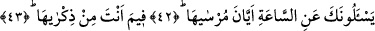
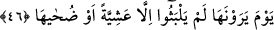
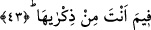

SANA KIYAMETİ SORARLAR
42. Sana kıyameti sorarlar: Gelip çatması ne zamandır (derler).
43. Sen onu nereden bilip bildireceksin?
44. Onun nihai ilmi yalnız Rabbine âiddir.
45. Sen ancak ondan korkanları uyarırsın.
46. Kıyamet gününü gördüklerinde (dünyada) sâdece bir akşam vakti ya da onun
kuşluk zamanı kadar kaldıklarını sanırlar.
“Sana kıyameti sorarlar: Gelip çatması ne zamandır? (derler)”
Bu âyette yer alan “mursâhâ” kelimesi “irsâuhâ” anlamında olup “kıyametin kopması”
demektir. Bu soruyu soranlar, Allah Teâlâ’nın kıyameti ne zaman koparacağını ve bunu
ne zaman ortaya çıkarıp yapacağını öğrenmek istiyorlar.
Âyetteki “eyyâne” kelimesi “ne zaman” anlamına bir zarftır. “el-Mursâ” kelimesi
yukarda işâret ettiğimiz gibi “el-irsâ” anlamında bir masdardır. Anlamı; “herhangi bir
şeyin isbatı, ortaya çıkarılması” demektir. Bu cümlede “mursâ” kelimesi mübtedâ,
“eyyane” ise başında bir muzaaf takdiri ile onun haberidir. Bu kelimenin başına muzaf
takdir etmek zorundayız. Çünkü herhangi bir olaydan sırf zaman edatı ile haber
verilmez. Bu takdiri yaparak âyete mânâ vermek gerekirse: “Sana, kıyametin vakti ne
zamandır diye sorarlar” diyebiliriz.
Müşrikler kıyametin haberlerini, en büyük felaket, korkunç ve kulakları sağır
edercesine bir ses ve şiddetli bir kapı çalma gibi özelliklerini duyuyorlar ve alay yollu
olarak Peygamber Efendimiz’e “kıyametin vakti ne zamandır?” diye soruyorlardı.
43. Sen onu nereden bilip bildireceksin?
Bu cümle, müşriklerin sordukları soruya bir red ve inkâr cümlesidir. Âyetteki “fîme”
kelimesinin aslı “fîmâ”dır. Âyette yer alan “ez-zikrâ” kelimesi “ez-zikr” mânâsındadır;
tıpkı “el-buşrâ”nın “el-bişara” anlamında olması gibi. Buna göre âyete şöyle mânâ
verilebilir: “Kıyametin vaktini sen hangi şeye dayanarak onlara hatırlatıp,